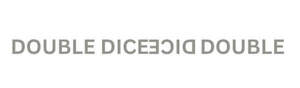

Trade Mark Journal No.2025/030 25 July 2025
UK00004233230 14 July 2025 (18,35)
Mark 1

Mark 2
- Class 18
- Bags; Tote bags; Luggage bags; Duffle bags; Toiletry bags; Belt bags and hip bags; Carrying bags; Grocery tote bags; Bags for umbrellas; Cross-body bags; Diaper bags; Luggage, bags, wallets and other carriers; Wheeled bags; Travel bags; Messenger bags; Leather bags and wallets; Reusable shopping bags; Hand bags; Bags [envelopes, pouches] of leather, for packaging; Attaché bags; Baby carrying bags; Suitcases; Carry-on suitcases; Suitcases with wheels; Leather suitcases; Motorized suitcases; Trunks [luggage]; Suitcases with built-in shelves; Backpacks [rucksacks]; Briefcases; Tags for luggage; Backpacks for carrying babies; Luggage covers; Wheeled shopping bags; Flight bags; Umbrellas; Parasols [sun umbrellas]; Umbrellas for children; Umbrella covers; Leather briefcases; Walking sticks; Folding walking sticks; Grips for holding shopping bags.
- Class 35
- Business management; Commercial business management; Business marketing services; Business administration; Wholesale ordering services; Wholesale services in relation to bags; Business management of wholesale and retail outlets; Wholesale services in relation to clothing; Wholesale services in relation to footwear; Wholesale services in relation to tableware; Wholesale services in relation to headgear; Wholesale services in relation to umbrellas; Wholesale services in relation to cookware; Wholesale services in relation to luggage; Wholesale services in relation to cups and glasses; Wholesale services in relation to works of art; Online retail services relating to handbags; Retail services connected with the sale of clothing and clothing accessories; Mail order retail services for clothing; Online retail services in relation to downloadable virtual handbags; Retail services in relation to bags; Retail services in relation to footwear; Direct market advertising; Retail services in relation to tableware; Retail services in relation to headgear; Retail services in relation to luggage; Provision of an online marketplace for buyers and sellers of goods and services; Retail services in relation to stationery supplies; Retail services in relation to umbrellas; Retail services in relation to works of art; Retail services in relation to printed matter; Administrative processing of purchase orders placed by telephone or computer; Administrative order processing.
DOUBLE DICE DICE DOUBLE LIMITED